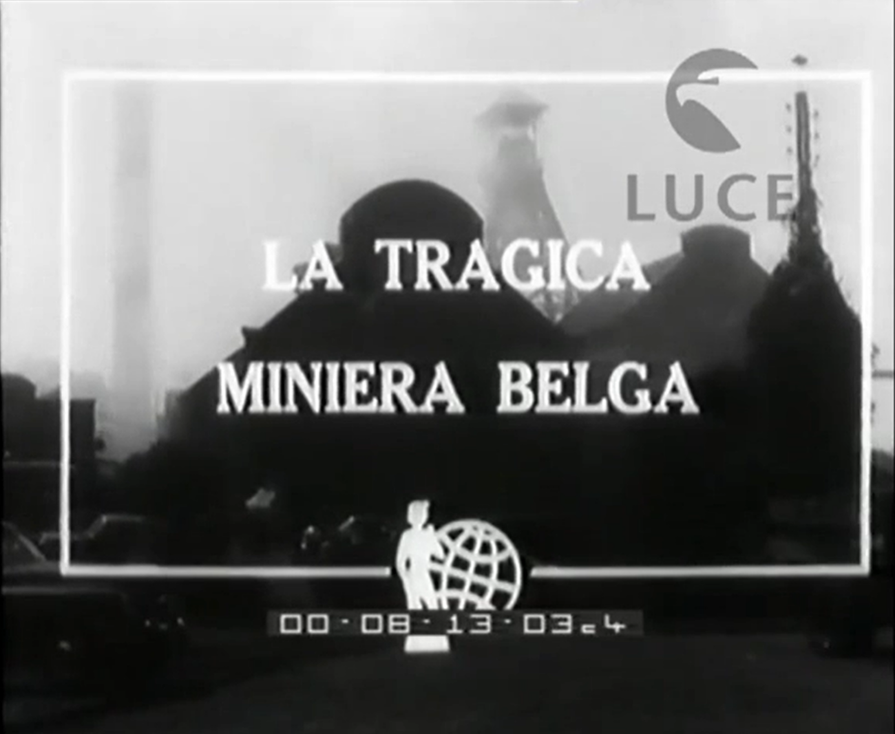
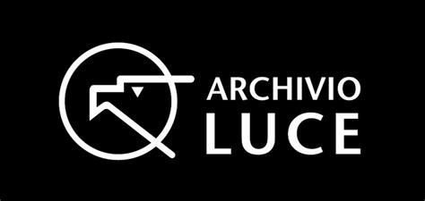

La tragica miniera belga
Miniere di Marcinelle: più di duecento minatori bloccati nelle viscere della terra. Decine i morti e i feriti. Sul posto accorrono il re Baldovino e il primo ministro Van Acker.

Titolo: La tragica miniera belga.
Abstract: Miniere di Marcinelle: più di duecento minatori bloccati nelle viscere della terra. Decine i morti e i feriti. Sul posto accorrono il re Baldovino e il primo ministro Van Acker.
Creatore: Incom (La Settimana Incom) Wikidata
Luogo di creazione: Marcinelle, Belgio Visualizza sulla mappa
Data di creazione: 1956 Visualizza sulla linea del tempo
Tipo di oggetto: Cinegiornale BNCF
Tecnica: video/film (digitalizzato, bianco e nero, sonoro, altri parametri tecnici originali non specificati nel record di origine)
Codice identificativo: VID_001
Identificativi esterni: IL5000032913 Vedi su Europeana, I144201 Vedi su Istituto Luce
Pubblicato da: Istituto Luce - Cinecittà
Fonte: Europeana
Lingua: Italiano (it)
Fa parte della raccolta: Europeana XX: Century of Change
Relazione: aggregato tramite Europeana, The European Film Gateway
Soggetto: industria estrattiva, cronaca, disastro, Baldovino di Belgio, Achille Van Acker
Diritti: In Copyright (rightsstatements.org/vocab/InC/1.0/) — © Istituto Luce - Cinecittà, tutti i diritti riservati
Descrizione
Cinegiornale della testata "La Settimana Incom" (edizione n. 01442, distribuita l'8/16 agosto 1956) dedicato al disastro minerario di Marcinelle (Belgio), avvenuto l'8 agosto 1956 nel pozzo del "Bois du Cazier". Un incendio provocato da un errore di manovra della gabbia di risalita innescò un incendio nel pozzo, che portò alla morte per asfissia di 262 minatori, di cui 136 di origine italiana, emigrati nelle miniere di carbone belghe nell'ambito degli accordi italo-belgi del dopoguerra (Protocollo del 23 giugno 1946). Il servizio documenta le fasi immediatamente successive alla tragedia: l'impianto minerario, i soccorsi, l'attesa dei familiari, l'arrivo delle autorità belghe e il recupero delle vittime.
Identificativi
Codice filmato Archivio Storico Istituto Luce:I144201 Vedi su Istituto Luce
Collezione di identificazione: IL5000032913 Vedi su Europeana
Titoli
Titolo principale: La tragica miniera belga.
Titolo descrittivo: Miniere di Marcinelle: più di duecento minatori bloccati nelle viscere della terra. Decine i morti e i feriti. Sul posto accorrono il re Baldovino e il primo ministro Van Acker.
Testata: La Settimana Incom Wikidata
Numero di edizione: La Settimana Incom n. 01442
Descrizione
Sintesi editoriale: Cinegiornale della testata "La Settimana Incom" (n. 01442, distribuito il 16 agosto 1956) dedicato al disastro minerario di Marcinelle (Belgio), avvenuto l'8 agosto 1956 nel pozzo del Bois du Cazier. L'incendio provocò la morte di 262 minatori, di cui 136 italiani emigrati in Belgio nell'ambito degli accordi italo-belgi del dopoguerra. Il servizio documenta le operazioni di soccorso, l'attesa dei familiari, l'arrivo delle autorità belghe e il recupero delle vittime.
Sequenze
- Impianto per l'estrazione del carbone di Marcinelle.
- Fumo nero che fuoriesce dal pozzo della miniera.
- Soldati dell'esercito belga scaricano le attrezzature di soccorso.
- Volontari si calano nel pozzo della miniera.
- Familiari dei minatori attendono notizie.
- Folla raccolta dietro i cancelli della miniera.
- Arrivo del re Baldovino e del primo ministro Achille Van Acker.
- Recupero dei corpi dei minatori.
- Trasporto dei feriti in barella.
- Un uomo si accascia sopraffatto dal dolore.
- I soccorsi continuano durante la notte.
Soggetti
Parole chiave: industria estrattiva; minatori; cronaca; disastro di Marcinelle; emigrazione italiana in Belgio; immigrazione italiana; carbone; soccorsi.
Genere: Cinegiornale
Persone correlate
Re del Belgio: Baldovino I del Belgio Scheda Persona
Primo ministro del Belgio: Achille Van Acker Scheda Persona
Copertura spazio-temporale
Luogo dell'evento: Marcinelle, Charleroi, Belgio Vai alla mappa
Sito: Bois du Cazier Vai alla mappa
Paese di produzione filmato: Italia
Data dell'evento: 8 agosto 1956 Vai alla linea del tempo
Data di distribuzione: 16 agosto 1956 Vai alla linea del tempo
Responsabilità
Casa di produzione: Incom – Industria Corti Metraggi
Ente conservatore: Istituto Luce - Cinecittà
Lingua
Lingua del commento parlato: Italiano (ITA)
Formato
Durata: 1 minuto e 44 secondi
Supporto originale: Pellicola cinematografica 35 mm sonora
Colore: Bianco e nero
Diritti
Titolare dei diritti: Istituto Luce – Cinecittà VIAF
Stato dei diritti: In Copyright
Rights Statement: https://rightsstatements.org/vocab/InC/1.0/
Relazioni e risorse esterne
Serie: La Settimana Incom (n. 01442)
Collezione Europeana: Europeana XX: Century of Change
Aggregatore: The European Film Gateway
YouTube: Guarda il video
Europeana: Scheda Europeana
Archivio Storico Istituto Luce: Scheda archivistica
Il fumo denso e acre proviene dal pozzo numero uno. Da quasi 1000 metri di profondità vi arde un intero filone carbonifero, e là sottoterra ci sono ancora 261 uomini, 139 italiani.
Da tutto il Belgio sono accorsi i volenterosi, che si calano giù per tentare di salvare i fratelli, pur sapendo che potrebbero non ritornare più anche loro.
Attorno alla miniera centinaia di persone attendono da ore, ormai da giorni. Hanno il proprio uomo e il proprio figlio sotto i loro piedi, consunti in una lenta, orribile morte, e non si può far niente. Niente.
Re Baldovino e il primo ministro Van Acker accorrono a Marcinelle. Niente, non si può far niente, se non dire parole di conforto, e forse, dare assicurazioni per il futuro.
Ma, ai morti, le parole non servono più. Fino a questo momento, oltre i sepolti, sono stati estratti sei feriti e 19 morti.
Talvolta l'incuria, la distrazione degli uomini, o anche la fatalità, scatenano le forze primigenie della natura. Forze misteriose che le antiche genti attribuivano ad orrendi mostri avidi di divorare vite umane.
Istituto di conservazione

Archivio storico Istituto LuceWikidata
Vai alla pagina dedicata